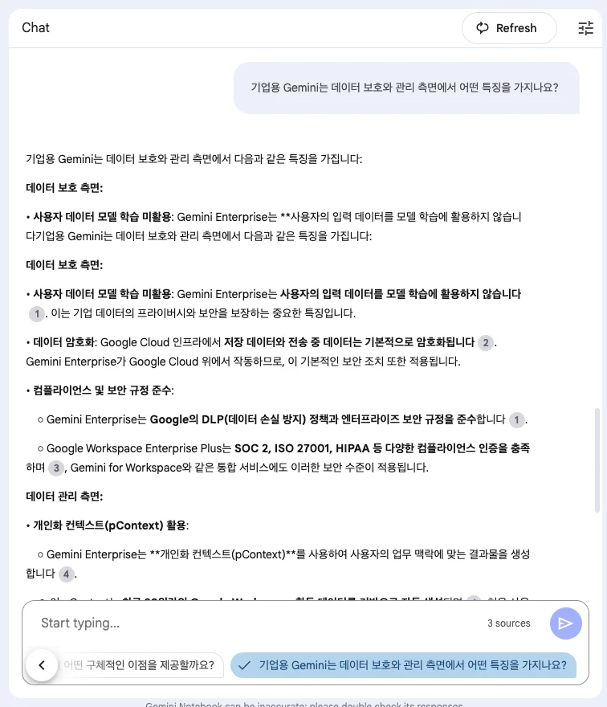
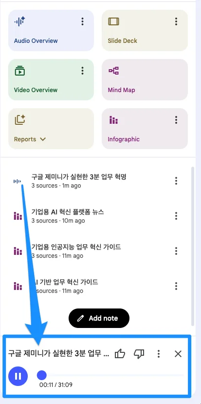
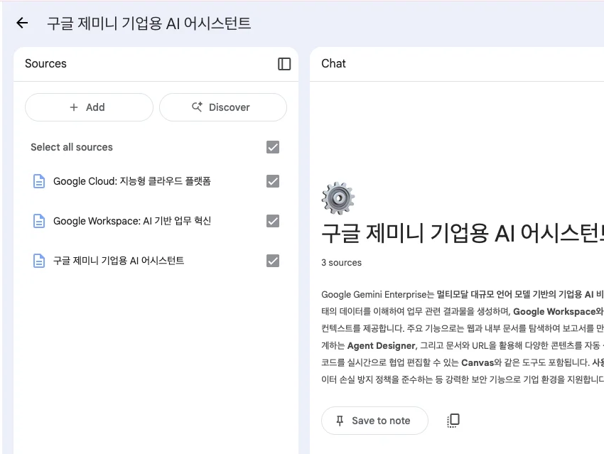

Gemini Notebook & 노코드 에이전트 구축
사내 소스 그라운딩 기반의 5종 멀티모달 콘텐츠 생성부터 Deep Research 심층 탐색,
그리고 코딩 없이 Agent Designer로 현업 비즈니스 워크플로우를 조립하는 체감형 실습입니다.
3대 소스 바인딩 및 인포그래픽, 팟캐스트, 슬라이드 5종 제작
다단계 자율 리서치 및 경쟁사 분석 심층 구조화 보고서
CRAFT 코치 에이전트 & 소셜 미디어 마케팅 멀티 에이전트
4단계 시장 분석 워크플로우 실행 및 ROI 성과 지표
팀 도서관 소스 3종 (Gemini · Enterprise AI · Cloud)
신뢰할 수 있는 소스 문서를 모아 100% 인용 기반의 팀 도서관을 구성합니다.
전사 공통 AI 엔진 및 실시간 지식 어시스턴트
• Model Armor 실시간 인라인 보안 방화벽
• 웹 검색 실시간 그라운딩
사내 일상 업무 문서 및 협업 도구 데이터 (M365/사내 포털)
• 사내 비정형 문서 및 보고서 자동 분석
• 무신뢰(Zero-Trust) 엔터프라이즈 암호화
엔터프라이즈 인프라 및 대규모 데이터 플랫폼
• BigQuery 대규모 정형 데이터 분석
• A2A(Agent2Agent) 멀티 에이전트 프로토콜
실습 1. 3종 스타일 인포그래픽 (기본 · 스케치 · 신문)
소스를 바인딩하고 프롬프트로 스타일을 지정하여 맞춤형 인포그래픽을 생성합니다.
- Google AI 서비스 텍스트 3종을 노트북 소스로 추가
- 우측 Studio ➔ Infographic (⋮) ➔ Customize 클릭
- 엔터프라이즈 소스 ➔ 기본 개요 스타일 생성
- Gemini 소스 ➔ 스케치노트 스타일 생성
- Cloud 소스 ➔ 신문 1면 스타일 생성

실습 2. Audio Overview (AI 2인 대담 팟캐스트)
두 명의 AI 호스트가 사내 문서를 바탕으로 자연스러운 한국어 대담 팟캐스트를 생성합니다.
- 1단계 (소스 선택): 종합 분석할 3개 문서 체크박스 활성화
- 2단계 (지침 설정): Customize 클릭 ➔ "임원 브리핑용 3분 요약" 지정
- 3단계 (생성 & 재생): [Generate] 클릭 ➔ 2인 AI 호스트 대담 즉시 청취
AI 호스트들이 대화하는 도중 사용자가 마이크를 켜고 "그 부분에서 보안 리스크는 어떻게 처리했나요?"라고 질문하면 AI 호스트가 대화를 멈추고 즉시 답변을 이어갑니다.

실습 3. Slide Deck (시네마틱 비주얼 슬라이드)
소스로부터 키 메시지를 추출하고 장면별 시네마틱 무드 슬라이드를 자동 생성합니다.
- 실습 시작 전 새 노트북(Create new) 열기
- Studio 패널 ➔ Slide Deck 선택
- 스토리보드 형식의 키 메시지와 배경 이미지 자동 매칭
- 장표별 스피커 노트(Speaker Notes) 대본 자동 생성
- PPTX 및 PDF로 원클릭 내보내기

실습 4. 설명서 및 리포트 3종 자동 완성
복잡한 기술 문서를 브리핑 문서, 스터디 가이드, FAQ 문서로 구조화하여 도출합니다.
경영진 보고용 1페이지 원페이저 요약
• 사업적 배경 및 시장 기회
• 핵심 해결 과제 & 기대 ROI
팀원 직무 교육 및 온보딩 핸드북
• 단계별 학습 목표 가이드
• 이해도 점검 퀴즈 5문항
고객 지원 및 현업 헬프데스크 지식베이스
• 사내 규정 원문 페이지 인용 링크
• 예외 처리 및 담당자 에스컬레이션
실습 5. Canvas 튜토리얼 비디오 제작
Notebook 분석 내용을 바탕으로 장면별 나레이션과 연출이 포함된 비디오를 기획합니다.
- 실습 시작 전 새 노트북(Create new) 열기
- Notebook에서 도출한 핵심 팁을 Canvas로 내보내기
- 60초 분량 숏폼 비디오 스크립트 작성 프롬프트 실행
- 장면(Scene)별 화면 구성, 자막 텍스트, 보이스오버 대본 분할
- Veo 프롬프트로 변환하여 1080p 고화질 영상을 실시간 렌더링
Deep Research: 다단계 자율 추론 & 정밀 대조
복합 질의를 하위 과제로 자동 분해하고 수십 회 자율 크롤링하여 컨설팅급 보고서를 도출합니다.
| 비교 지표 | 일반 검색 AI | Deep Research Agent |
|---|---|---|
| 검색 쿼리 수 | 1~2회 단발성 검색 | 20~50개 다단계 쿼리 자동 파생 |
| 탐색 소스 범위 | 상위 3~5개 웹 페이지 | 160+ 웹페이지 & PDF 원문 독해 |
| 데이터 검증 | 단순 텍스트 요약 | 다중 출처 상호 교차 검증 |
| 최종 산출물 | 1~2문단 단문 답변 | 10p 분량 구조화 심층 보고서 |
| 소요 시간 | 2~5초 즉시 응답 | 3~7분 심층 자율 연산 |
실전 Deep Research: 글로벌 AI 에이전트 시장 분석
엔터프라이즈 AI 에이전트 시장 현황, 주요 벤더별 강약점, 2026 로드맵을 종합 분석합니다.
- Executive Summary: 3줄 핵심 요약 및 시사점
- Market Overview: 2026년 시장 규모 통계 데이터
- Vendor Comparison Table: 기능/보안/비용 다차원 비교
- Case Studies: 금융, 헬스케어, 제조 도입 실사례
- Citations: 40개 이상의 공식 링크 및 논문 출처
엔터프라이즈 AI 에이전트 5대 아키타입 (Archetypes)
단순 검색 에이전트부터 자율 추론 및 멀티 에이전트 협업까지 5단계로 체계화하여 분류합니다.
사내 지식베이스 문서와 웹 검색을 기반으로 100% 인용 출처 요약
사내 REST API, SQL DB, 계산기 등 외부 시스템을 자율적으로 호출 실행
조건 분기와 순차 단계를 거쳐 비즈니스 프로세스를 결정론적으로 자동화
고차원 목표를 자율 분해하고 실패 시 스스로 계획을 수정하며 최종 달성
기획, 작성, 보안 검증 등 전문 에이전트들이 상호 대화하며 협업 완성
Agent Designer: 노코드 맞춤 에이전트 제작 스튜디오
코딩 없이 자연어 지시어와 도구 바인딩만으로 현업 맞춤 에이전트를 제작합니다.
에이전트의 역할, 전문성, 말투, 금지 사항(Guardrails)을 자연어로 명확히 규정
• Output Format: 마크다운 코드 블록
• Guardrail: 사내 보안 정책 위반 시 즉시 거절
사내 매뉴얼, GCS 버킷 / M365 폴더, 웹 URL을 에이전트 전용 참조 문서로 지정
• Freshness: 주간 자동 증분 색인 동기화
• ACL: 개별 사용자 권한 실시간 상속
구글 검색, 코드 인터프리터, 사내 커넥터 도구를 활성화하여 실행력 부여
• Extension: ServiceNow ITSM 커넥터
• Human-in-the-Loop: 쓰기 작업 시 승인 강제
실습 1. CRAFT 프롬프트 코치 에이전트 제작
사용자의 모호한 요청을 C.R.A.F.T 5요소로 분석하여 완성형 프롬프트로 변환하는 코치입니다.
- Name: CRAFT Prompt Optimizer
- Description: 모호한 지시어를 엔터프라이즈 CRAFT 프롬프트로 리팩토링
- Instructions: 사용자가 질의를 입력하면 5단계 요소를 검토하고 누락된 맥락을 채워 최종 프롬프트 코드 블록을 제공할 것
실습 2. 소셜 미디어 게시물 멀티 생성 에이전트
단일 제품 정보를 채널별 특성에 맞춰 링크드인, 인스타그램, 블로그 카피로 동시 다변화합니다.
- LinkedIn: 전문적인 B2B 인사이트 톤, 비즈니스 가치 강조, 해시태그 3개
- Instagram: 감성적인 비주얼 중심 어조, 이모지 적극 활용, 줄바꿈 서식
- X (Twitter): 핵심 요약 280자 이내, 강렬한 후킹 문장
Workflow Agent: 노코드 비즈니스 프로세스 자동화
입력 조건 검증, 단계별 처리, 최종 승인까지 이어지는 파이프라인을 시각적으로 연결합니다.
사용자 입력 또는 웹훅 트리거 수신 후 필수 데이터 누락 여부 자동 검증
• 이상 입력 탐지 시 재요청 프롬프트 분기
• JSON 스키마 기반 정형화
데이터 유형(정형/비정형) 및 심각도에 따라 서로 다른 전문 하위 태스크로 라우팅
• 정량 통계 필요 시 SQL DB 쿼리 실행
• 정성 분석 시 Deep Research 병렬 호출
하위 결과물을 종합하고 필요 시 담당자 승인(HITL)을 거쳐 최종 시스템에 반영
• 외부 시스템 쓰기 시 승인 모달 팝업
• Slack/이메일 자동 알림 발송
실습 3. 시장 분석 4단계 워크플로우 파이프라인
타깃 산업 키워드를 입력하면 4단계를 순차 실행하여 완성형 전략 기획서를 도출합니다.
- Executive Summary: 1페이지 핵심 전략 요약
- Market Data: CAGR 및 벤더별 시장 점유율 표
- SWOT Matrix: 4대 영역별 핵심 요인 정밀 분석
- Action Plan: Q1~Q3 우선순위 과제 및 담당 부서 지정
워크플로우 실행 결과: 완성형 전략 기획 보고서
정량 데이터 표, SWOT 매트릭스, 실행 로드맵이 완비된 완성형 문서가 도출됩니다.
- 팀 공유: Gemini Enterprise 공용 스튜디오에 워크플로우 등록
- 정기 리포팅: 매주 월요일 타깃 산업 키워드 자동 실행 예약
- 보고서 내보내기 (PPTX/PDF): 경영진 주간 전략 회의 자료로 즉시 상정
Track 2 실습 성과: 지식 도서관 & 에이전틱 가치 실현
팀 지식을 체계화하고 반복 업무를 에이전트로 자동화하여 실질적 비즈니스 가치를 달성했습니다.
흩어진 문서와 데이터를 Notebook 도서관에 결합하여 단일 진실 공급원(SSOT) 구축
• 원문 인용 100% 검증으로 환각 제로 실현
단순 검색을 넘어 160+ 웹 문서를 자율 탐색 및 교차 검증하는 분석 역량 확보
• 데이터 기반 객관적 의사결정 체계 확립
코딩 없이 Agent Designer와 Workflow를 통해 현업 비즈니스 프로세스 자동화
• 전사 부서별 시민 개발자(Citizen Dev) 양성
Track 2 실습 완료 & 다음 트랙 안내
노코드 에이전트 과정을 마쳤습니다. 다음 단계로 커넥터 연동 및 Python ADK 프로코드 개발 트랙으로 이동합니다.
3대 소스 바인딩, 인포그래픽, 팟캐스트, 슬라이드 5종 제작
160+ 웹페이지 자율 크롤링 및 글로벌 시장 분석 리포트
CRAFT 코치, 소셜 마케팅 멀티봇, 4단계 시장 분석 파이프라인